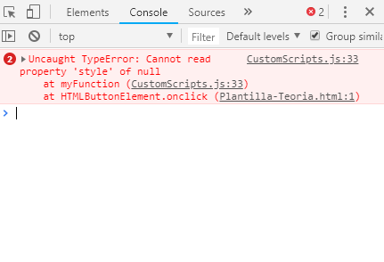

0.0 TEMA DE LA PLANA
TITOL PRINCIPAL
Estructura de la web
SUBTITULS
Els blocs de teoria:
- S'obren sempre que s'escriu contingut en una pàgina de teoria.
- Es tanquen després d'acabar aquell bloc. Sovint un bloc correspon a l'explicació de cada subtítol.
Si es vol introduir linies d'alerta, per remarcar el que calgui: <alerta> contingut alerta </alerta>
Podem introduir talls de codi dins de la teoria, per fer-ho necessitem fer una cadena de tags:
- Pseudocodi: si volem fer un tros de pseudocodi els tags són els següents:
<pseudocodi><pre><code class="nohighlight"> .... codi ... </code ></pre></pseudocodi>
Aixo és un exemple de pseudocodi - C++: si volem fer un tros de c++ únicament hem d'esborrar el pseudocodi, i canviar la classe del code al llenguatge que volem utilitzar, el nostre cas c++
<pre><code class="c++"> .... codi ... </code ></pre>
"Aixo es un exemple de c++"
Codi amagat darrera un botó
- Creació del boto: el botó es crearà de la següent manera: <button onclick="myFuntion(IDcodi)"> nom visible del boto </button>
El idCodi serà l'idintificador del nostre tros de codi, ha de ser ÚNIC en tota la pàgina, altrament tindrem un error de javascript. - Creació del codi: per fer el codi, utilitzarem els següents tags: <solucio id="idCodi"><pre><code class="c++"> .... codi ... </code ></pre></solucio>
Un exemple seria el següent:"Exemple codi C++"Exemple Pseudocodi - Exemple d'error: Simplement per observar que passa quan no es canvia els ID dels blocs de codi i els butons:
Exemple Pseudocodi"Exemple codi C++"
Si utilizeu google chrome (recomenat per eines de debugg), anant a la consola (F12 --> console) podem veure que ens dispara un error. 